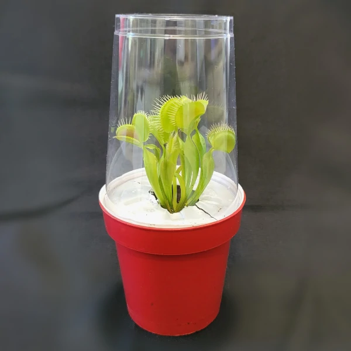
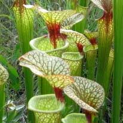

How to care for your plants
Venus Fly Traps

Height: 1"-5".
Plant Type: Perennial, warm temperate.
Bloom Time: June to July.
Bloom Color: White.
Soil: Upper Bog Mix or All-Purpose Mix.
Light: Bright indoors, full sun to partial sun outdoors.
Water: Consistently moist.
Use: Grows well in the bog garden, greenhouse and indoors.
It is an excellent subject for terrariums.
Pitcher Plant

Height: 8"-12".
Plant Type: Perennial, temperate.
Soil: Lower Bog or General CP Mix.
Light: Bright indoors, full sun to partial sun outdoors.
Use: Grows well in the bog garden, greenhouse and indoors.
Sundew

Height: 2" - 5".
Plant Type: Perennial, tropical.
Soil: Lower Bog Mix or General CP Mix.
Light: Bright indoors, full sun to partial sun outdoors.
Use: Grows well in the protected bog garden, greenhouse and indoors.
It is an excellent terrarium plant.